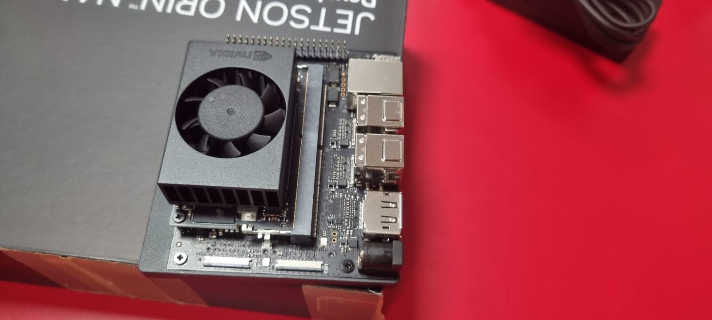

Configuración inicial de la jetson nanonoviembre 27, 2025 Marcos Adán RuizGuía de configuración de la jetson nanoRead other posts← Configuración inicial de la raspberry pi y el mac mini Comparativa de modelos →